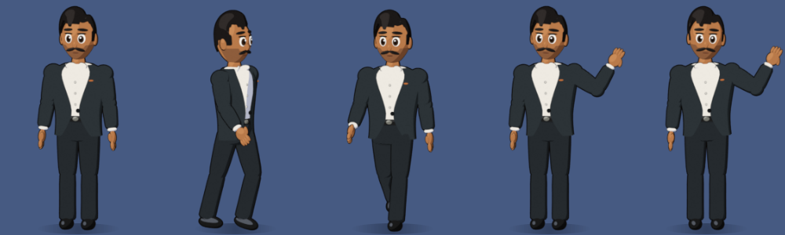

01 / THE PROBLEM
My day lives in too many tabs.
Meetings sit in Outlook, notes in documents, quick messages on my phone, and the small things I promise to do live in my head. Each tool is good on its own, but nothing connects them, and a reminder that pops up once is easy to miss.
I wanted one friendly place to ask “what’s next?”, one that notices when I’m about to miss a meeting and doesn’t need me to open another app. Desktop Buddy is that place: a character on my desktop, backed by an AI assistant that can use my calendar, reminders and notes.
02 / A CHARACTER, NOT A WINDOW
Something you notice without being interrupted.
Buddy walks along the side of the screen, waves when he has something to say, and after ten quiet minutes pulls up a chair and sits down. When he speaks, his mouth moves with the words.

A character carries information that a notification can’t. You can see at a glance whether he’s listening, thinking, talking or resting, and a wave is far easier to notice, and far kinder, than a pop-up.
03 / WHAT HE CAN DO
Small jobs that add up over a day.
- Meeting reminders that don’t give up. Ten minutes before a meeting he shows a card with the join link, and repeats it every two minutes until I join or dismiss it. With the first reminder, he gives a short briefing on what the meeting is about.
- Minutes of meeting. When I join a call, he asks whether to record. If I say yes, he transcribes it on the laptop, including mixed English and Telugu, and writes structured minutes: decisions, action items and owners.
- An assistant with memory. I can ask about my schedule, set reminders, or tell him things to remember. Notes and past minutes are stored in a small local database he can search later.
- Everyday shortcuts. “Open Downloads”, “open Firefox”, fixing the grammar in a paragraph, or drafting a WhatsApp message that he sends only after I confirm it.
- A companion while I code. Hooked into my coding tools, he tells me when a long task has finished, so I can step away without watching the terminal.
04 / “HEY BUDDY”
A voice that works in the languages I actually speak.
Voice runs in stages, so the expensive steps only happen when they’re needed:
- Listen for speech. An adaptive gate follows the room’s background noise and cuts the microphone stream into utterances.
- Check for the wake phrase. A tiny, fast speech model listens for “Hey Buddy”. Anything else is dropped straight away.
- Understand the question. A larger model transcribes the command. If I spoke Telugu, it is translated into English for the assistant, and Buddy answers in Telugu.
- Answer and speak. Claude writes a short spoken reply, and a local text-to-speech voice says it while his mouth moves. For a few seconds afterwards he listens for a follow-up, without needing “Hey Buddy” again.
A lesson from debugging
One day, voice replies suddenly became very slow. The code hadn’t changed: after a restart, the laptop’s microphone gain had reset to maximum, so the silence in the room sounded as loud as speech and Buddy never heard a pause. Measuring the signal found the cause in minutes. The fix was a lower gain plus a listener that re-learns the room by itself. It was a good reminder to measure before guessing.
05 / DESIGNED FOR TRUST
An assistant on your desktop has to earn its place.
Something that listens and knows your calendar has to be trustworthy by design, not by promise. A few rules shaped the product:
- Audio stays on the laptop. Wake-word detection, transcription and speech all run locally. Microphone audio is held in memory only until it has been checked.
- Ask first, every time. Meetings are never recorded automatically, and messages are never sent without an explicit yes.
- Step back on calls. When another app is using the microphone, he stops listening, so colleagues saying “buddy” won’t wake him.
- Secrets stay out of the code. API keys and calendar links live in the user’s own settings, never in the repository.
06 / HOW IT’S BUILT
A desktop app with an AI core.
| Part | What it does | Built with |
|---|---|---|
| Character | Walking, waving, sitting and talking animation | Blender, pre-rendered sprites, PyQt6 |
| Assistant | Answers questions and uses tools: calendar, reminders, memory, apps, messages | Claude API with tool use, streaming |
| Memory | Remembers notes and past minutes and searches them | SQLite with full-text search |
| Voice | Wake word, speech recognition, translation, speech | faster-whisper, Silero VAD, Piper TTS |
| Meetings | Reminders, briefings, recording and minutes | Outlook calendar feed, PipeWire, Claude |
The project is covered by more than 200 automated tests that run on every change, including the voice logic, which is tested without a microphone by feeding in generated audio.
07 / TAKEAWAYS
Start with the moment, not the model.
The most useful features came from specific moments in my day: missing a meeting link, forgetting what was agreed on a call, wanting to ask something without switching windows. The AI model matters, but the product is in the details around it: when to interrupt, when to stay quiet, and when to ask permission.
I built Desktop Buddy in phases, with Claude Code as my pair programmer. Each phase ended with something I could use the next day, which kept the roadmap honest. Next, I want to add a settings window, simpler installation and a short demo video.
08 / TRY IT
Explore the code.
Desktop Buddy is open source. The repository includes the Python application, the Blender scripts that build and render the character, and the test suite. It runs on Linux (GNOME) and needs a Claude API key for the assistant features.